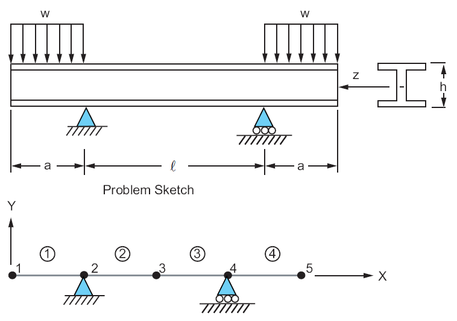

Note
Click here to download the full example code
Beam Stresses and Deflections#
Problem Description
A standard 30 inch WF beam, with a cross-sectional area \(A\), is supported as shown below and loaded on the overhangs by a uniformly distributed load \(w\). Determine the maximum bending stress, \(\sigma_max\), in the middle portion of the beam and the deflection, \(\delta\), at the middle of the beam.
Reference
S. Timoshenko, Strength of Material, Part I, Elementary Theory and Problems, 3rd Edition, D. Van Nostrand Co., Inc., New York, NY, 1955, pg. 98, problem 4.
Analysis Type(s)
Static Analysis ANTYPE=0
Element Type(s):
3-D 2 Node Beam (BEAM188)
{kind=link}
Material Properties
\(E = 30 \cdot 10^6 psi\)
Geometric Properties
\(a = 120 in\) \(l = 240 in\) \(h = 30 in\) \(A = 50.65 in^2\) \(I_z = 7892 in^4\)
Loading
\(w = (10000/12) lb/in\)
Analytical Equations
\(M\) is the bending moment for the middle portion of the beam: \(M = 10000 \cdot 10 \cdot 60 = 6 \cdot 10^6 lb \cdot in\)
Determination of the maximum stress in the middle portion of the beam is \(\sigma_max = \frac{M h}{2 I_z}\)
The deflection, \(\delta\), at the middle of the beam can be defined by the formulas of the transversally loaded beam: \(\delta = 0.182 in\)
Start MAPDL#
# sphinx_gallery_thumbnail_path = '_static/vm2_setup.png'
from ansys.mapdl.core import launch_mapdl
# Start mapdl and clear it.
mapdl = launch_mapdl()
mapdl.clear()
# Enter verification example mode and the pre-processing routine.
mapdl.verify()
mapdl.prep7()
*****MAPDL VERIFICATION RUN ONLY*****
DO NOT USE RESULTS FOR PRODUCTION
***** MAPDL ANALYSIS DEFINITION (PREP7) *****
Define Element Type#
Set up the element type (a beam-type).
# Type of analysis: Static.
mapdl.antype("STATIC")
# Element type: BEAM188.
mapdl.et(1, "BEAM188")
# Special Features are defined by keyoptions of beam element:
# KEYOPT(3)
# Shape functions along the length:
# Cubic
mapdl.keyopt(1, 3, 3) # Cubic shape function
# KEYOPT(9)
# Output control for values extrapolated to the element
# and section nodes:
# Same as KEYOPT(9) = 1 plus stresses and strains at all section nodes
mapdl.keyopt(1, 9, 3, mute=True)
Define Material#
Set up the material.
mapdl.mp("EX", 1, 30e6)
mapdl.mp("PRXY", 1, 0.3)
print(mapdl.mplist())
MATERIAL NUMBER 1
TEMP EX
0.3000000E+08
TEMP PRXY
0.3000000
Define Section#
Set up the cross-section properties for a beam element.
SECTION ID NUMBER IS: 1
BEAM SECTION TYPE IS: I Section
BEAM SECTION NAME IS: ISection
COMPUTED BEAM SECTION DATA SUMMARY:
Area = 50.650
Iyy = 7892.0
Iyz = 0.76051E-12
Izz = 590.47
Warping Constant = 0.12403E+06
Torsion Constant = 14.962
Centroid Y = 0.10702E-14
Centroid Z = 15.048
Shear Center Y =-0.96799E-12
Shear Center Z = 15.048
Shear Correction-xy = 0.54626
Shear Correction-yz = 0.20960E-12
Shear Correction-xz = 0.38629
Beam Section is offset to CENTROID of cross section
Define Geometry#
Set up the nodes and elements. Create nodes then create elements between nodes.
# Define nodes
for node_num in range(1, 6):
mapdl.n(node_num, (node_num - 1) * 120, 0, 0)
# Define one node for the orientation of the beam cross-section.
orient_node = mapdl.n(6, 60, 1)
# Print the list of the created nodes.
print(mapdl.nlist())
1 0.0000 0.0000 0.0000 0.00 0.00 0.00
2 120.00 0.0000 0.0000 0.00 0.00 0.00
3 240.00 0.0000 0.0000 0.00 0.00 0.00
4 360.00 0.0000 0.0000 0.00 0.00 0.00
5 480.00 0.0000 0.0000 0.00 0.00 0.00
6 60.000 1.0000 0.0000 0.00 0.00 0.00
Define elements
for elem_num in range(1, 5):
mapdl.e(elem_num, elem_num + 1, orient_node)
# Print the list of the created elements.
print(mapdl.elist())
# Display elements with their nodes numbers.
mapdl.eplot(show_node_numbering=True, line_width=5, cpos="xy", font_size=40)
LIST ALL SELECTED ELEMENTS. (LIST NODES)
1 1 1 1 0 1 1 2 6
2 1 1 1 0 1 2 3 6
3 1 1 1 0 1 3 4 6
4 1 1 1 0 1 4 5 6
Define Boundary Conditions#
Application of boundary conditions (BC).
# BC for the beams seats
mapdl.d(2, "UX", lab2="UY")
mapdl.d(4, "UY")
# BC for all nodes of the beam
mapdl.nsel("S", "LOC", "Y", 0)
mapdl.d("ALL", "UZ")
mapdl.d("ALL", "ROTX")
mapdl.d("ALL", "ROTY")
mapdl.nsel("ALL")
ALL SELECT FOR ITEM=NODE COMPONENT=
IN RANGE 1 TO 6 STEP 1
6 NODES (OF 6 DEFINED) SELECTED BY NSEL COMMAND.
Define Distributed Loads#
Apply a distributed force of \(w = (10000/12) lb/in\) in the y-direction.
***** ROUTINE COMPLETED ***** CP = 0.000
Solve#
Enter solution mode and solve the system. Print the solver output.
mapdl.run("/SOLU")
out = mapdl.solve()
mapdl.finish()
print(out)
***** MAPDL SOLVE COMMAND *****
*** NOTE *** CP = 0.000 TIME= 00:00:00
There is no title defined for this analysis.
*** SELECTION OF ELEMENT TECHNOLOGIES FOR APPLICABLE ELEMENTS ***
---GIVE SUGGESTIONS ONLY---
ELEMENT TYPE 1 IS BEAM188 . KEYOPT(1)=1 IS SUGGESTED FOR NON-CIRCULAR CROSS
SECTIONS AND KEYOPT(3)=2 IS ALWAYS SUGGESTED.
ELEMENT TYPE 1 IS BEAM188 . KEYOPT(15) IS ALREADY SET AS SUGGESTED.
*****MAPDL VERIFICATION RUN ONLY*****
DO NOT USE RESULTS FOR PRODUCTION
S O L U T I O N O P T I O N S
PROBLEM DIMENSIONALITY. . . . . . . . . . . . .3-D
DEGREES OF FREEDOM. . . . . . UX UY UZ ROTX ROTY ROTZ
ANALYSIS TYPE . . . . . . . . . . . . . . . . .STATIC (STEADY-STATE)
GLOBALLY ASSEMBLED MATRIX . . . . . . . . . . .SYMMETRIC
*** NOTE *** CP = 0.000 TIME= 00:00:00
Present time 0 is less than or equal to the previous time. Time will
default to 1.
*** NOTE *** CP = 0.000 TIME= 00:00:00
The conditions for direct assembly have been met. No .emat or .erot
files will be produced.
*** NOTE *** CP = 0.000 TIME= 00:00:00
Internal nodes from 7 to 14 are created.
8 internal nodes are used for quadratic and/or cubic options of
BEAM188, PIPE288, and/or SHELL208.
L O A D S T E P O P T I O N S
LOAD STEP NUMBER. . . . . . . . . . . . . . . . 1
TIME AT END OF THE LOAD STEP. . . . . . . . . . 1.0000
NUMBER OF SUBSTEPS. . . . . . . . . . . . . . . 1
STEP CHANGE BOUNDARY CONDITIONS . . . . . . . . NO
PRINT OUTPUT CONTROLS . . . . . . . . . . . . .NO PRINTOUT
DATABASE OUTPUT CONTROLS. . . . . . . . . . . .ALL DATA WRITTEN
FOR THE LAST SUBSTEP
*** NOTE *** CP = 0.000 TIME= 00:00:00
Predictor is ON by default for structural elements with rotational
degrees of freedom. Use the PRED,OFF command to turn the predictor
OFF if it adversely affects the convergence.
Range of element maximum matrix coefficients in global coordinates
Maximum = 2.999405619E+10 at element 0.
Minimum = 2.999405619E+10 at element 0.
*** ELEMENT MATRIX FORMULATION TIMES
TYPE NUMBER ENAME TOTAL CP AVE CP
1 4 BEAM188 0.000 0.000000
Time at end of element matrix formulation CP = 0.
SPARSE MATRIX DIRECT SOLVER.
Number of equations = 60, Maximum wavefront = 0
Memory available (MB) = 0.0 , Memory required (MB) = 0.0
Sparse solver maximum pivot= 0 at node 0 .
Sparse solver minimum pivot= 0 at node 0 .
Sparse solver minimum pivot in absolute value= 0 at node 0 .
*** ELEMENT RESULT CALCULATION TIMES
TYPE NUMBER ENAME TOTAL CP AVE CP
1 4 BEAM188 0.000 0.000000
*** NODAL LOAD CALCULATION TIMES
TYPE NUMBER ENAME TOTAL CP AVE CP
1 4 BEAM188 0.000 0.000000
*** LOAD STEP 1 SUBSTEP 1 COMPLETED. CUM ITER = 1
*** TIME = 1.00000 TIME INC = 1.00000 NEW TRIANG MATRIX
Post-processing#
Enter post-processing. To get the stress and deflection results
from the middle node and cross-section of the beam we can use
Mapdl.get_value.
# Enter the post-processing routine and select the first load step.
mapdl.post1()
mapdl.set(1)
# Get the maximum stress at the middle of the beam.
s_eqv_max = mapdl.get_value("secr", 2, "s", "eqv", "max")
# Get the deflection at the middle of the beam.
mid_node_uy = mapdl.get_value(entity="NODE", entnum=3, item1="u", it1num="y")
Check Results#
Now that we have the results we can compare the nodal displacement and stress experienced by middle node of the beam to the known stresses -11,400 psi and 0.182 inches of the deflection.
# Results obtained by hand-calculations.
stress_target = 11400.0
deflection_target = 0.182
# Calculate the deviation.
stress_ratio = s_eqv_max / stress_target
deflection_ratio = mid_node_uy / deflection_target
# Print output results.
output = f"""
----------------------------- VM3 RESULTS COMPARISON -----------------------------
| TARGET | Mechanical APDL | RATIO |
----------------------------------------------------------------------------------
Stress{stress_target:18.3f} {s_eqv_max:16.3f} {stress_ratio:14.3f}
Deflection{deflection_target:14.3f} {mid_node_uy:16.3f} {deflection_ratio:14.3f}
----------------------------------------------------------------------------------
"""
print(output)
----------------------------- VM3 RESULTS COMPARISON -----------------------------
| TARGET | Mechanical APDL | RATIO |
----------------------------------------------------------------------------------
Stress 11400.000 11440.746 1.004
Deflection 0.182 0.182 1.003
----------------------------------------------------------------------------------
stop mapdl
mapdl.exit()
Total running time of the script: ( 0 minutes 0.631 seconds)